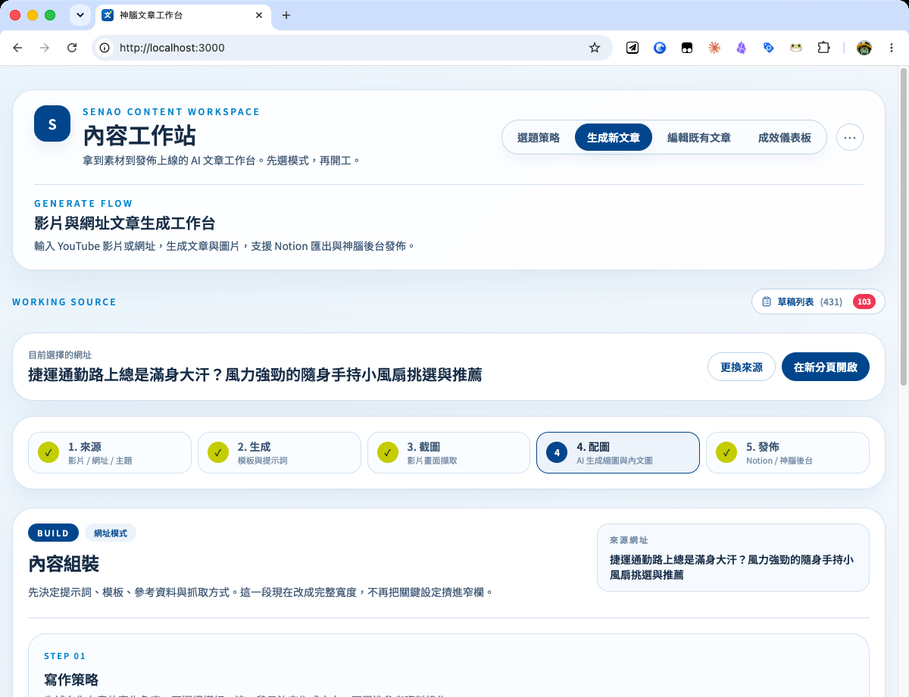
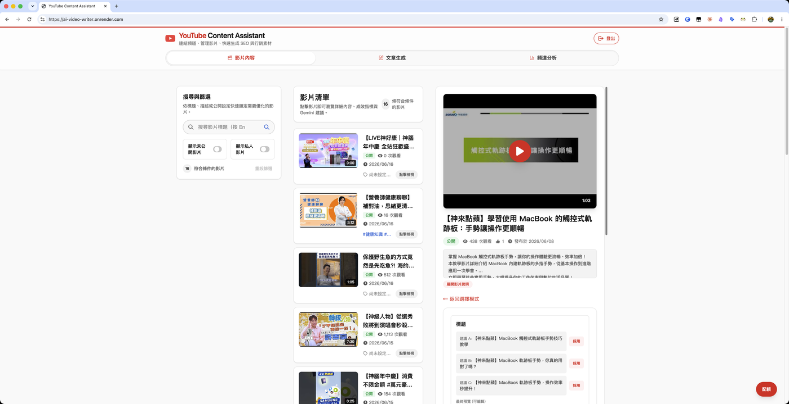

履歷與作品集
Jas Chiang
內容企劃／行銷從業人員，把生成式 AI 與自動化工具接成可營運的工作流，聚焦內容、影音與數據。
關於我
我是內容企劃／行銷從業人員，長期做產品教學與科技科普內容；近年把 AI 與自動化工具接進工作，從內容、影音到數據都串成可實際運作的工作流。
做法是先定義需求與驗收標準，再驅動 AI Agent 落地工具與素材（程式由 AI 產出，我負責拆問題與把關）；重點不是自動化本身，而是降低重複作業、提升判斷速度。
求職方向：內容行銷相關職位，特別是消費性科技產品領域，或能把行銷與 AI 結合的角色。
經歷
- 企劃與執行累計逾 350 支產品教學與科技科普影片，涵蓋 Apple、Samsung 與《秒懂潮科技》等系列，其中單支最高觀看逾 17 萬。
- 協助經營神腦生活內容平台，企劃【神腦 AI+】【神來點蘋】【秒懂潮科技】等文章系列，把產品與科技知識轉成可搜尋內容；我經手的系列近一年累計逾十萬次造訪，單篇最高逾 3 萬次。
- 把選題、產文、配圖、上架、導購追蹤與成效分析整理成 AI 輔助流程，降低重複手動作業。
- 製作 AI 生成行銷影音，並建立 GA4、Search Console、YouTube Analytics 的對話式查詢工具。
- 製作 AI 入門課程，並在公司內分享 AI 的實際用法與 workaround，讓同事對「AI 能做什麼」有概念與靈感。
- 經營神腦國際社群粉絲團，撰寫官網「達人觀點」專欄，累積對 3C 受眾與內容操作的理解，奠定後續轉向內容企劃／製作的基礎。
- 經營 Windows Phone Taiwan 粉絲團，協助 Windows Phone 通路推廣。
- App 評測與專欄撰寫。
技能
AI 工具與工作流
行銷與內容
生成式內容與影音
數據與分析
用 AI 打造工具
學歷
AI 工具與專案
以下工具多為個人自用或工作流程原型。我負責需求定義、流程設計、AI 協作開發與驗收，重點是把內容與數據工作轉成可操作的工具流程。
給內容行銷與電商編輯使用的 AI 內容營運工作台，把選題、產文、配圖、上架、導購追蹤與成效分析接成同一條流程。

技術組成與完整功能
技術棧：React／TypeScript／Vite／Tailwind 前端，Node.js／Express 後端。
AI 產文與改稿：Google Gemini（多模態、YouTube 影片理解、Files API、URL Context、Search Grounding）產出標題、內文、FAQ 與文章結構；OpenRouter 可換模型做整篇或局部改寫。
AI 配圖（縮圖＋內文圖）：先用 OpenRouter 模型依文章內容規劃視覺風格與圖片提示詞，再透過 fal.ai 呼叫 Nano Banana Pro 或 GPT Image 2 生成縮圖與內文配圖，也能參考產品圖，省去另外開圖檔工具的步驟。
智慧插卡：貼上商品頁／活動頁／文章網址，程式自動抓取網頁資料、交給 LLM 生成卡片的標題與描述，再拼成 HTML 卡片插入文章；支援商品卡、活動卡、延伸閱讀卡與影片卡，連結自動帶 ?content=postId 標記是哪篇文章帶來的導購。
一鍵發佈：文章與縮圖可接入既有 CMS 發佈流程，不必手動複製貼上或另外上傳縮圖；發佈時也會一併加入結構化資料（標題、作者、FAQ、商品價格與庫存狀態），並可匯出到 Notion 備份。
成效串接：GA4 Data API ＋ Google Search Console API，看文章真實的曝光、點擊、流量與商品導流，回頭優化內容。
自動化與品質：GitHub Actions 每日備好活動稿／商品稿候選、每週掃描失效商品連結；HTML lint＋Schema.org JSON-LD＋Vitest 把關 AI 產文格式。
設計核心：不是單純「AI 寫文章」，而是「內容帶流量、流量帶商品、資料再反推內容優化」的閉環，從讀一條 YouTube 連結就產文的小工具，逐步長成涵蓋生產、上架、成效、維運的生產線。
開發方式：整套以 Claude Code 輔助開發，我負責需求拆解、流程設計與驗收。
給 YouTube 創作者使用的工具，把頻道影片轉成 SEO 內容，並用自然語言對話分析頻道資料。

技術組成與完整功能
技術棧：React 19／Node.js／Express，可部署到 Render 常駐使用。
AI 與資料：Google Gemini（影片理解）、YouTube Data／Analytics API、OpenRouter（可切換 Claude、GPT 等模型）、Notion API、FFmpeg 截圖、chart.js 圖表。
資料工具（AI 可呼叫）：頻道總覽、用關鍵字找影片、單片成效、觀眾留存率曲線，AI 自動決定查哪些資料再彙整成報告。
自動化：GitHub Actions 定期更新影片快取，節省 YouTube API 配額。
開發方式：主要由 Claude Code 協助開發，UI 由 Codex 協助調整。
公司電商 App 首頁有影音輪播看板。賣場雖然有下架通知，但通知是寄 Excel 檔、又沒有看板介面，不容易即時掌握； 我做了一支每天自動巡檢首頁輪播的監控，確認該上的影片有上、點擊連結沒接錯，發現異常就寄 email 通知到公司信箱。
完整功能與用法
檢查什麼：首頁輪播的影片看板是否正常上架（避免該上的沒上）、每個看板點進去的連結是否正確、以及看板連到特定館別時，該館別是否確實放了對應的影片。
緣由：賣場雖有下架通知，但以 Excel 寄送、又沒有看板可看，不好即時發現問題，所以自己做了自動巡檢補上這個缺口。
做法：原本想串 App 的對外 API，後來發現首頁其實是行動網頁（mweb），就改成定期抓取 mweb、比對輪播內容，邏輯更單純也更穩定。
技術：Python 腳本 ＋ GitHub Actions 排程每日自動執行，偵測到異常就寄 email 通知到公司信箱。
開發方式：用 Claude Code 研究頁面結構與落地腳本，我負責需求與驗收。
把 GA4 與 Google Search Console 接進 Claude／ChatGPT，讓我能直接在對話裡查流量、搜尋曝光與內容機會。
完整功能與用法
能聊什麼：網站的流量與即時在線、轉換漏斗、不同受眾的占比與排行；搜尋面的曝光、點擊、排名與關鍵字，還能查單一網址在 Google 的索引狀態。也接了站內的商品與文章搜尋，當寫 SEO 內容時的查料助手。
一個入口查多種來源：GA4、搜尋成效（Search Console）、站內資料整合在同一個工具裡，問一句就能跨來源回答，不用在多個後台之間切換。
我怎麼用它：主要拿來快速討論、找方向，有點像在跟同事討論數據；但為了避免 AI 抓錯或誤解我要的數字，真正的判斷還是會回 Looker Studio 或 GA 核對報表。
隨處可用：可以在自己電腦上跑，也能部署到雲端、從任何裝置使用，不必依賴某台電腦一直開著。
緣由：從一個「把 GA4 接進 Claude」的小實驗，約十天內長成涵蓋流量、搜尋成效與站內資料的多來源分析工具。
開發方式：由 Claude Code 與 Codex 協助開發。
把 YouTube 頻道與影片成效接進 Claude／ChatGPT，用問答方式查觀看、流量來源、留存與內容表現。
完整功能與用法
能聊什麼：列出與搜尋自己的影片，查單支或整個頻道的觀看、完播、訂閱與流量來源，比較不同影片或時段的表現，快速找出哪些內容有效。
Gist 快取省配額：YouTube 的 API 每天有固定查詢額度（約 10,000 點），很容易用完。所以我把影片清單快取到 GitHub Gist（GitHub 提供的免費雲端小筆記，這裡當輕量資料庫用），查影片時先讀快取、不必每次都打 API，把額度留給真正需要即時數字的分析。
我怎麼用它：主要拿來快速討論成效、找洞察；但為了避免 AI 抓錯或誤解我要的數字，真正的判斷還是會回 YouTube Studio 核對報表。
隨處可用：可以在自己電腦上跑，也能部署到雲端、從任何裝置使用。
開發方式：由 Claude Code 協助開發。
把 UTM 追蹤參數與短網址的產生規範化、流程化的行銷小工具。團隊裡有人會忘記 UTM 格式、隨意填寫，導致追蹤資料品質參差；這個工具讓大家照著填就不會出錯，部署在 Vercel、隨處可用。
影音作品 · 內容企劃
點任一列可展開說明與影片 ▾
產品教學內容系列我企劃並負責腳本的 Apple、Samsung 與科技科普教學影片系列
長期企劃與製作累計逾 350 支產品教學與科技科普影片，包含 Apple《神來點蘋》、Samsung《星事神最懂》與《秒懂潮科技》。 我負責主題規劃與腳本，與動畫師或攝影師合作，把 3C 功能與科技知識轉成容易理解的影音內容。
神來點蘋・Apple 教學
星事神最懂・Samsung 教學
秒懂潮科技・科技科普
影音作品 · AI 生成
點任一列可展開製作流程與影片 ▾
吉祥物社群關懷影片配合地震、寒流、節慶等時事，用吉祥物向社群傳遞關懷的短影音
以品牌吉祥物為主角，配合地震、寒流、開工、走春、颱風等時事與節慶推出的社群關懷短影音。 這批作品重點在於用低成本快速產出多版素材，再挑選可用片段剪成社群內容。
地震篇
寒流篇
開工篇
走春篇
颱風篇
端午篇（1:1）
吉祥物外觀有獨特設定，要在 AI 生成的每個畫面裡維持一致是主要挑戰；我刻意讓吉祥物的動作維持簡單、不做太大的肢體變化，降低走樣、露出破綻的機率。
也刻意用較低畫質、較短秒數來生成，失敗的高畫質長片段很燒錢。
低成本的版本能多生成幾版，再從中挑出堪用的片段拿去剪輯，用更低的成本換到更多可用的選擇。
端午節這支更採混合做法：結合生成式圖片、HyperFrames 程式化動畫與剪輯、加上部分生成式影片，用程式化方式提供動態，避免整支都用較貴的 AI 影片生成，把簡單的節慶小影片成本壓得更低。
AI 技術實驗：純程式碼合成影片不靠剪輯軟體、全程用 AI 與程式碼合成的 Mac 操作教學
用 AI Agent 與網頁技術製作的影片實驗，從畫面、動畫、字幕到旁白都以程式化流程合成。 同一支 Mac 操作教學輸出 16:9 與 9:16 兩種版本。
技術製作
- 影片框架
- HyperFrames（用 HTML/CSS/GSAP 寫動畫，headless Chrome 算圖）
- AI Agent
- Claude Code（我負責需求、流程與驗收）
- 中文旁白
- 16:9 版用 fal.ai gemini-3.1-flash-tts；9:16 版改用自己複製的語音 ＋ fal.ai minimax/speech-2.8-hd
- 字幕對齊
- ffmpeg silencedetect
- Mac 介面
- 100% 純 HTML/CSS 模擬，沒有用任何真實截圖
16:9 版
9:16 版
智慧家電推廣短影音LG、Samsung 智慧家電在零售門市的推廣短片
LG、Samsung 智慧家電的零售通路推廣短影音。兩支共用同一條 AI 生成與 HyperFrames 合成管線， 再依品牌敘事與鏡頭需求調整分鏡、角色和轉場。
生成時我會用 Claude Code 搭配 skill 幫我調整提示詞，再透過 genmedia 送到 fal 生成。為了讓畫面更貼近設定，通常會用 start / end frame 來強化，或看影像生成模型有沒有 ref 功能，把角色與產品的設定圖一起丟進去當參考。
不過影片生成無法言出法隨，加上成本考量也不能無限嘗試到滿意為止，勢必要有所取捨；有時到最後只能從生成的廢片裡資源回收，再靠剪輯把堪用的片段補強起來。
LG 複合店
片段生成後在 HyperFrames 排版合成，部分鏡頭的銜接與瑕疵也靠 HyperFrames 做後製修正補強。
Samsung 複合店
為了讓鏡頭銜接合乎空間邏輯，先生成門市全景定位， 再依序生成不同正面景的分鏡，最後用 HyperFrames 的轉場把片段接續成完整動線。
手機健檢服務宣傳片推廣門市手機健檢服務、結合 3D 門市場景的宣傳片
為零售通路的手機健檢服務製作的宣傳片。3D 門市場景是用 Claude Code 生成 Three.js 場景、 再以錄影功能錄出「進門市」的運鏡；搭配實際操作的手機健檢螢幕錄影，一起用 HyperFrames 合成製作。
Computex 攤位循環影片Computex 展場攤位循環影片，以 HyperFrames 製作首尾，並用語音複製與合成讓全片旁白一致
協助集團公司製作的 Computex 攤位循環播放影片。我負責首尾動畫、配音一致性與音量後處理， 讓 IT 單位提供的中段螢幕錄影能包裝成完整展示影片。
技術製作
- 首尾兩段
- HyperFrames（HTML/CSS/GSAP 動畫），素材取自集團公司官網
- 中 段
- IT 單位提供、帶旁白的螢幕錄影
- 配音一致
- 提取中段旁白、複製語音後用在首尾段，讓整支配音是同一個聲音
- 音量一致
- ffmpeg 後處理，讓全片響度一致